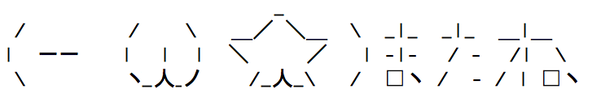

開発者の部屋
開発者の部屋へようこそ。
このページに意味はありません。ページ構築に迷走して結果の産物です。
各位、公開遅れて申し訳ありませんm(_ _)m
エラー・バグ
- 拡大して右にずらした状態で高速で縮小するとナビゲーションバーがずれる
- 拡大縮小でナビ下に微妙な空白
- コンテンツ全体の中央寄せ
- ピンチイン/アウトするとposition: fixed;が崩れる
編集メモ
デザイン
- headerのフリースペース用背景画像
- 左に寄せるのありかも
- カウントダウン jQuery flipCountDownの使用
- レスポンシブデザイン
- スマートフォンのお気に入り用アイコン作りたいかも
戦略
- ミスミスターの検索が多いのは一目瞭然なので、公式ページにも少しコンテンツ、リンクをのせ、検索に引っ掛けさせる。
- お酒についての情報は大きめに載せたいところ
知識
- サイドバー：ブログでは右に、スタティックなサイトでは左
- snap.svgの活用
- 1em = 16px
- webフォントについては再考すること
- フォントについて、要検討
